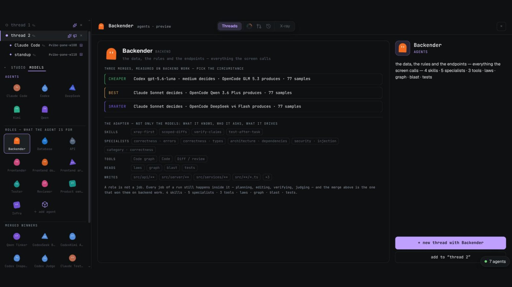
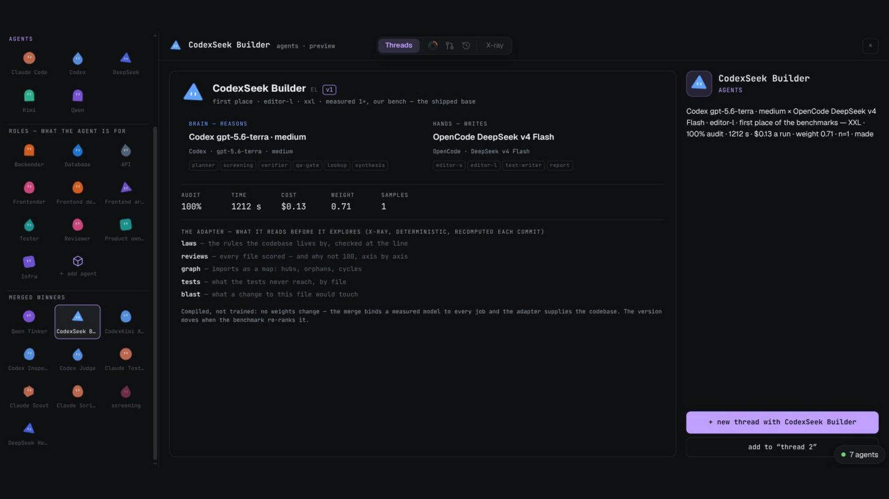
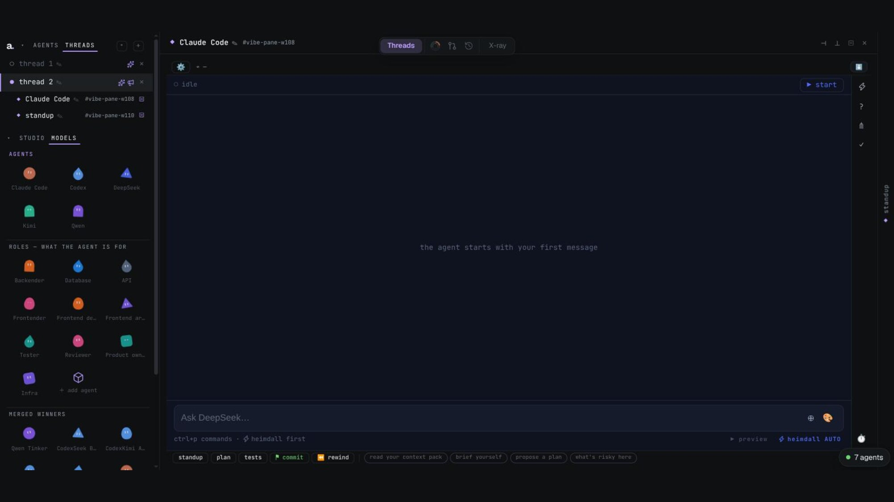
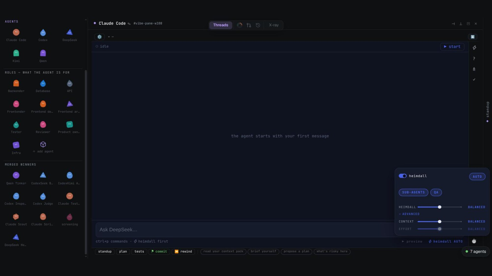
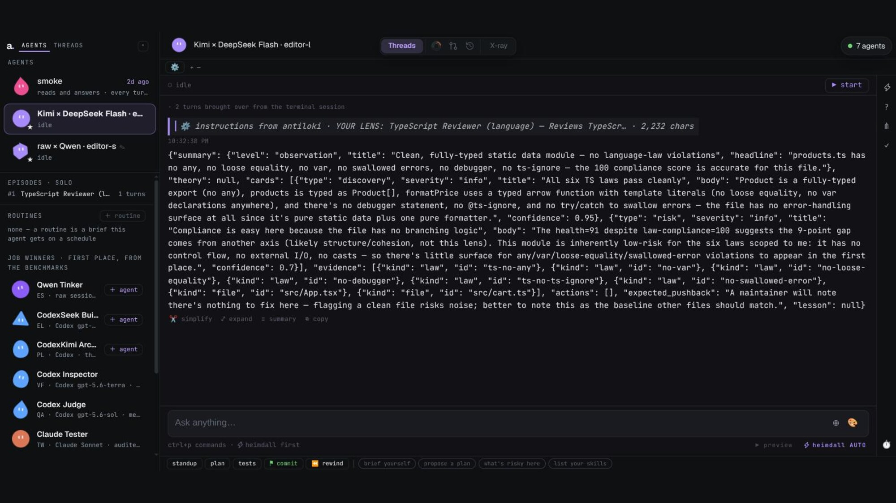
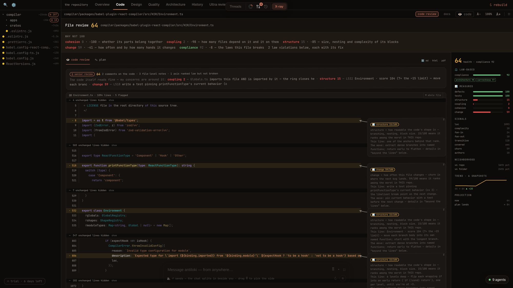
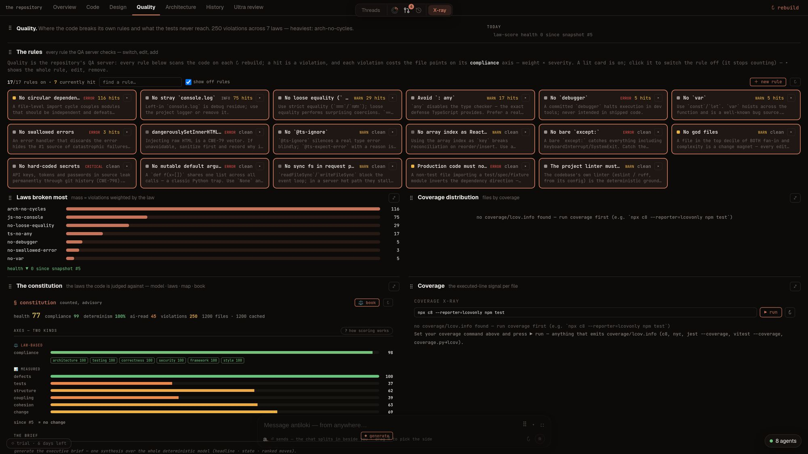
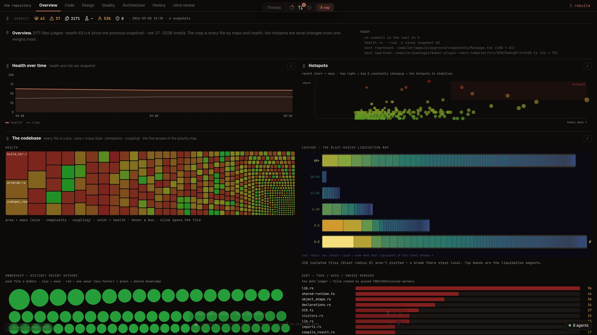
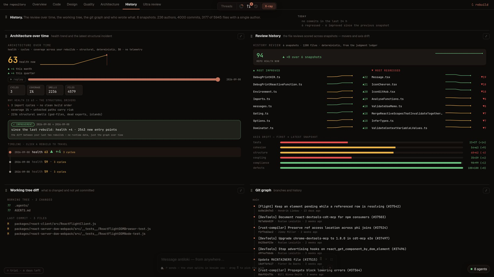
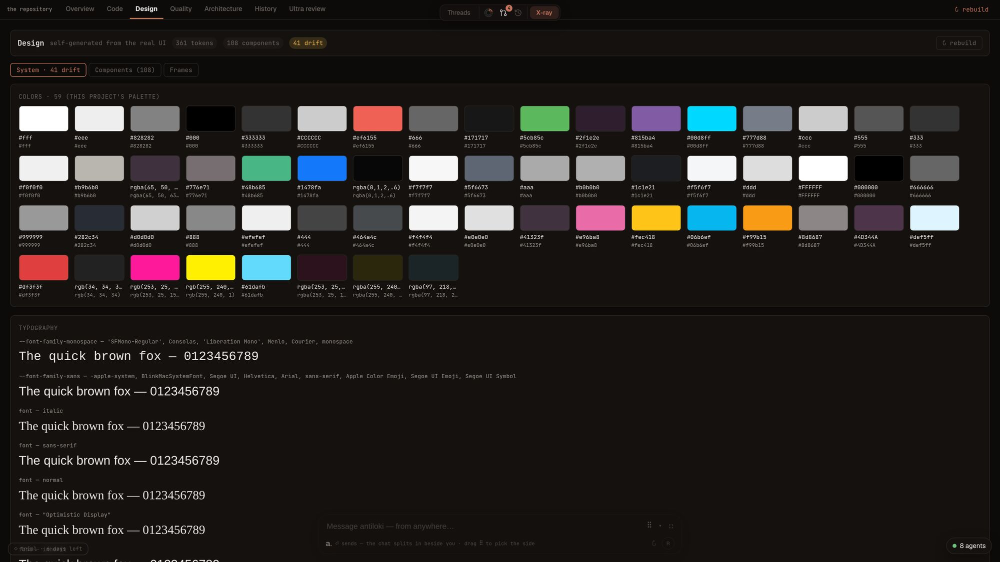

Threads
Speed — agents that work in parallel, each in its own box.





- 01
One job, one thread.
The chat, the agents and the tools that job needs, side by side — drag, resize, collapse. Leave for X-ray and the agents keep working; a floating stack shows each one's line.
- 02
Boxed, not trusted.
Every agent gets a worktree and a scope. A write anywhere else is refused by the tool itself, before the file changes — and the scope sentry shows the attempt, with one click to widen or keep.
- 03
Heimdall routes every ask.
A high-tier planner reads the ask first: one job or a plan, which model, which tier — the cheapest that can do it. Sub-agents fan out in parallel, each in its own box, on the subscription you already pay.
- 04
Planned, verified, judged.
A goal splits into tasks that own disjoint files; each is verified against its acceptance; an isolated QA judge reviews the whole run; one pull request at the end — sealed if the judge failed it.
- 05
Preview beside it. MIN when you want it cheap.
▶ preview boots the agent's worktree next to the chat, live. MIN mode turns exploration off — the agent navigates by antiloki's own intel (reviews, graph, docs, ASTs) and touches the disk only to edit.
X-ray
Safety — every file judged, every number explained, before anything ships.





- 01
The verdict, not a vibe.
Every file reviewed and scored — and why not 100, axis by axis: coupling, structure, cohesion, defects, tests, change. Deterministic analysis; no AI in the number.
- 02
Laws, not lint.
The rules your codebase lives by, checked at the line: what breaks a law, where, and what compliance is worth. A senior review that reads the same way every time.
- 03
The codebase as a map.
Every file a box, area its mass, colour its health; hubs, orphans, cycles, the most central and the most risky — at a glance, and per folder.
- 04
What the tests never reach. What a change would touch.
Coverage gaps by file, the blast radius before a change lands, and the review over the snapshots — the score's history, scrubbable.
- 05
The same intel feeds the agents.
Reviews, graph, docs and ASTs become the context pack every agent starts from — what MIN mode navigates by. Design too: your screens captured from the running app, the design system and its drift.